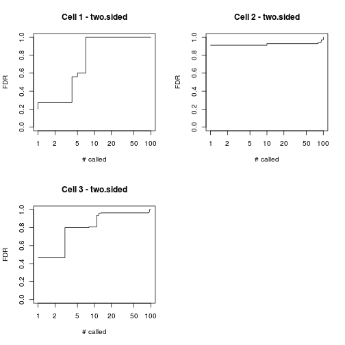

gedAlgorithm.csSAM(Y, x, data = NULL, nperms = 200, alternative = c("two.sided",
"greater", "less"), standardize = TRUE, medianCenter = TRUE, logRm = FALSE, logBase = 2,
nonNeg = TRUE, verbose = lverbose())
S3 (ged_csSAM)
`csTopTable`(x, ...)
S3 (ged_csSAM)
`csplot`(x, types = NULL, xlab = "# called", ylab = "FDR", ylim = c(0,
1), ...)
NMF-class model containing the cell
proportions in the coefficient matrix -- and a normally
empty basis matrix. The proportions must be ordered in
the same order as the samples in the target matrix.
For csTopTable, a csSAM fit as return by
ged.data.x.y.Estimates cell/tissue proportions given a known set of
cell/tissue-specific expression signatures, using
standard least-squares, as implemented by the package
csSAM.
The S3 method csTopTable for csSAM fits returns,
for each feature, the false discovery rates of
differential expression between groups of samples within
each cell type, as computed by
fdrCsSAM when running csSAM. These
are returned as a list, whith one element per cell type.
The S3 method csplot for csSAM fits plots
cell-specific fdr cumulative distributions.
All regressions are fitted using the function
lsfit.
Shen-Orr SS, Tibshirani R, Khatri P, Bodian DL, Staedtler
F, Perry NM, Hastie T, Sarwal MM, Davis MM and Butte AJ
(2010). "Cell type-specific gene expression differences
in complex tissues." _Nature methods_, *7*(4), pp. 287-9.
ISSN 1548-7105,
# random global expressionx <- rmix(3, 100, 20)basisnames(x) <- paste('Cell', 1:nbasis(x))# extract true proportionsp <- coef(x)# deconvolve using csSAMres <- ged(x, p, 'csSAM')head(basis(res))Cell 1 Cell 2 Cell 3 gene_1 14.904380 7.302067 7.468591 gene_2 15.421772 7.822874 4.223157 gene_3 5.889809 1.697394 1.879031 gene_4 18.115828 3.112732 9.106662 gene_5 17.087112 8.567335 8.246638 gene_6 6.749257 16.564898 2.021393# proportions are not updatedidentical(coef(res), p)[1] TRUE# estimate cell-specific differential expression between 2 groupsgr <- gl(2, 10)res <- ged(x, p, 'csSAM', data = gr, nperms=20, verbose=TRUE)Using ged algorithm: “csSAM” Groups: 1=10L | 2=10L Fitting cell-specific linear model ... OK Computing csSAM model statistics ... OK Computing fdr using 20 permutations ... OK Finding signature genes ... OK Timing: user system elapsed 0.508 0.000 0.509 GED final wrap up ... OKhead(basis(res))Cell 1 Cell 2 Cell 3 gene_1 -0.66878820 0.5356998 -0.1518649 gene_2 -0.06208674 -1.5574655 0.1770388 gene_3 1.22202213 -0.7268541 -0.1377018 gene_4 0.21687196 0.2001415 0.1688434 gene_5 -0.61873810 0.2361388 -0.1912592 gene_6 -0.17319605 -0.6734038 0.3090709# plot FDRscsplot(res)
# extract fdr for top differentially expressed gene in each cell typet <- csTopTable(res)str(t)List of 3 $ Cell 1: Named num [1:100] 0.2 0.275 0.275 0.275 0.56 0.6 0.6 1 1 1 ... ..- attr(*, "names")= chr [1:100] "gene_47" "gene_51" "gene_62" "gene_92" ... $ Cell 2: Named num [1:100] 0.91 0.91 0.91 0.91 0.91 0.91 0.91 0.91 0.91 0.91 ... ..- attr(*, "names")= chr [1:100] "gene_2" "gene_13" "gene_18" "gene_32" ... $ Cell 3: Named num [1:100] 0.467 0.467 0.467 0.8 0.8 ... ..- attr(*, "names")= chr [1:100] "gene_51" "gene_63" "gene_68" "gene_17" ...